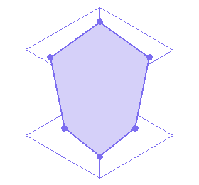

Đi theo 5 bước, không bị ngợp
Đọc từ trên xuống. Mỗi bước có một việc chính và một điểm kiểm tra để bạn biết khi nào nên chuyển sang bước tiếp theo.
Tạo tài khoản và chuẩn bị dữ liệu
Chọn Đăng ký, nhập email và mật khẩu. Sau đó chuẩn bị điểm học tập, chứng chỉ, thành tích, hoạt động và dự án. Nên đăng nhập trước khi nhập dữ liệu để mọi thay đổi được lưu theo tài khoản.
Hoàn thiện hồ sơ năng lực
Vào Hồ sơ năng lực, điền thông tin cá nhân, thêm chứng chỉ/thành tích/hoạt động/dự án và tải PDF minh chứng nếu có. Bấm Lưu thông tin hồ sơ rồi kiểm tra lại phần trăm hoàn thiện.
- Điểm học tập
- Ngoại ngữ
- Thành tích
- Hoạt động
- Dự án
- Minh chứng
Chạy đánh giá và đọc gợi ý
Ở Bảng điều khiển, nhập điểm học thuật, chọn chứng chỉ ngoại ngữ và thành tích. Xem Ngành nghề tương thích cùng Khoảng trống năng lực. Mở Đánh giá & Gợi ý để xem Top ngành, lưu gợi ý hoặc xuất báo cáo PDF.

Khám phá ngành và chọn hướng
Vào Thư viện nghề nghiệp, tìm theo từ khóa, mở chi tiết và so sánh 2–3 ngành. Khi thấy hướng phù hợp, bấm Thêm vào lộ trình để chuyển sang phần phát triển bản thân.
Tạo kế hoạch, luyện tập và xuất CV
Trong Phát triển bản thân, bấm Tạo lộ trình bằng AI, dùng Bắt đầu/Đã học để cập nhật tiến độ và thêm mục tiêu theo ngày. Khi hồ sơ đủ dữ liệu, chọn Chuẩn hóa hồ sơ, kiểm tra CV rồi In / lưu PDF.
Phiên đầu tiên đã đủ khi bạn có:
- Tài khoản
- Hồ sơ đã lưu
- Kết quả đánh giá
- 2–3 ngành đã đọc
- Một mục tiêu học tập
- CV đã kiểm tra
Kết quả chưa sát với mong muốn thì làm gì?
Kiểm tra hồ sơ đã đủ điểm, ngoại ngữ, thành tích và dự án chưa; cập nhật phần còn thiếu, lưu lại rồi chạy đánh giá lại.
Chưa muốn nhập hồ sơ có xem nghề được không?
Có. Bạn vẫn có thể dùng Thư viện nghề nghiệp, nhưng cần hoàn thiện hồ sơ để nhận gợi ý cá nhân hóa.
Nhập điểm hoặc chứng chỉ như thế nào để kết quả chính xác?
Nhập đúng thang điểm được yêu cầu trên màn hình, không tự quy đổi nếu website chưa hướng dẫn. Với chứng chỉ ngoại ngữ, chọn đúng loại chứng chỉ và nhập điểm theo giấy chứng nhận.
Có thể thay đổi mục tiêu sau khi đã tạo lộ trình không?
Có. Bạn có thể thêm mục tiêu mới, cập nhật ngày và thời lượng, đánh dấu nhiệm vụ đã học hoặc xóa mục tiêu không còn phù hợp trong phần Phát triển bản thân.
Ảnh hưởng thế nào nếu chưa có thành tích hoặc dự án?
Không sao. Hãy để trống phần chưa có và cập nhật dần khi bạn tham gia hoạt động mới. Kết quả lúc đầu chỉ phản ánh dữ liệu hiện có, không phải đánh giá cố định về khả năng của bạn.
CV do AI tạo có cần kiểm tra lại không?
Có. Hãy kiểm tra tên, thời gian, điểm số, vai trò và mô tả dự án trước khi lưu hoặc gửi CV. AI chỉ hỗ trợ trình bày, bạn vẫn là người chịu trách nhiệm về thông tin cuối cùng.